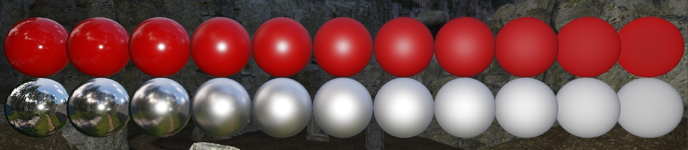

Обзор
Внешний вид материалов затенения на физической основе будет строго контролироваться с помощью текстур, а не индивидуально настроенных значений Specular/Gloss в файле материала.
Значения Specular/Gloss должны быть заблокированы для проекта, чтобы обеспечить визуальную согласованность при создании контента.
Альбедо (Рассеянный цвет)
Альбедо (ранее известное как диффузный цвет) определяет, насколько яркой является поверхность, когда она освещена непосредственно источником белого света с интенсивностью, равной единице. Говоря физически, он определяет, какой процент каждого компонента спектра RGB не поглощается при рассеянии света под поверхностью. Для диэлектриков (неметаллов) всегда требуется карта альбедо. Чистый металл обычно использует чёрную диффузную карту, однако окисленный металл (например, ржавчина) имеет диффузный цвет.
Карта альбедо обычно довольно чистая, с низкой контрастностью и не должна содержать никакой информации об освещении, затенении или тенях, поскольку все они добавляются движком динамически. Единственным исключением являются некоторые микромасштабные окклюзии, например, потемнение в крошечных складках или трещинах, которые слишком малы, чтобы их мог обрабатывать движок.
Нормали поверхности
Большинство материалов должны иметь карту нормалей. Убедитесь, что используется правильная предустановка текстуры, иначе карта нормалей может быть подвергнута гамма-коррекции и дать неправильные результаты затенения.
Отражение (зеркальный цвет)
Отражение (ранее известное как зеркальный цвет) определяет, сколько света сразу отражается от поверхности, когда источник света находится непосредственно над поверхностью. Это минимальная интенсивность бликов, под углами скольжения она будет увеличиваться из-за эффекта Френеля. Коэффициент отражения — это физическая величина, которую следует выбирать непосредственно из справочной таблицы. По сути, это не оставляет большой творческой свободы.
Большинство неметаллов отражают от 2% до 5% (обычно 4%) света как зеркальные, а блики монохромные/серые. Поскольку вариации очень малы, часто бывает достаточно использовать постоянный зеркальный цвет вместо карты зеркальной текстуры. Однако если металл и неметалл смешаны в одной текстуре, необходимо использовать карту отражений, поскольку металл имеет гораздо более яркий зеркальный цвет, чем неметалл. Если используется карта зеркального отражения, цвет зеркального отражения в редакторе материалов должен быть установлен на белый цвет, то есть 255/255/255, так как он умножается на значения из карты зеркального отражения и в противном случае приведет к снижению физических значений карты.
Гладкость (глянец)
Гладкость определяет, насколько шероховатой или глянцевой является поверхность. Низкое значение гладкости означает, что поверхность шероховатая, а высокое значение означает, что поверхность очень полированная и блестящая. Шероховатость поверхности влияет на размер и интенсивность зеркальных бликов. Чем более гладкая/глянцевая поверхность, тем меньше будет бликов. Более узкая/меньшая подсветка будет в то же время ярче, чтобы подчиняться правилам сохранения энергии.
Большинству материалов следует использовать карту сглаживания, поскольку она позволяет придавать затенению множество вариаций и делает поверхность интересной. Глянец тесно связан с картами нормалей, поскольку высокочастотные детали в нормалях также могут создавать ощущение шероховатости. Однако блеск — это скорее микрошероховатость материала.

Карта плавности хранится в альфа-канале карты нормалей. Если предустановка NormalsWithSmoothness выбран, RC автоматически настроит карту сглаживания, хранящуюся в альфа-канале, на основе отклонения нормалей и снизит плавность в тех частях, где нормали очень неровные. Это может значительно помочь уменьшить временные искажения (мерцающие, сверкающие блики).
Рекомендации по созданию различных материалов
Материальная субстанция в огромной степени определяется зеркальным цветом. Используйте справочную таблицу, чтобы выбрать цвет, соответствующий нужному типу материала.
Неметаллы
- Неметалл имеет монохромный/серый зеркальный цвет. Никогда не используйте цветные зеркальные линзы для чего-либо, кроме металлов.
- Цветовой диапазон sRGB для большинства неметаллических материалов обычно составляет от 40 до 60. Он никогда не должен превышать 80/80/80.
- Требуется хорошая чистая карта альбедо.
- Ржавый металл можно рассматривать как неметалл, но он имеет зеркальный цвет.
Металлы
- Зеркальный цвет металла обычно должен быть выше sRGB 180.
- Металл может иметь цветные зеркальные блики (например, золото и медь).
- Металл имеет черный или очень темный рассеянный цвет.
Контрольный список для настройки активов
- Множитель диффузного цвета установлен на 255/255/255.
- Зеркальные цвета являются физически правдоподобными значениями (правильные значения см. в справочном разделе).
- Для чисто неметаллических материалов карта отражений не используется.
- Если используется карта зеркального отражения, цвет материала Specular Color должен быть 255/255/255.
- Если карта зеркального отражения не используется, Material Specular Color является физически обоснованным значением.
- Используется карта сглаживания, которая создает интересные и правдоподобные вариации зеркальных бликов.
Советы
- Карта гладкости — одна из самых важных текстур. С помощью карты гладкости вы можете дать некоторую историю активу. Например, сделайте части объекта, к которым часто прикасались люди, менее грубыми.
- Внесите вариации в карту гладкости. Не просто случайный шум, а действительно подумайте, где объект будет менее или более грубым.
- Для неметаллических объектов не тратьте время на карту зеркального отражения, а сосредоточьтесь на карте гладкости. Это также поможет сэкономить память, так как в большинстве случаев достаточно постоянного цвета зеркального материала.
- Всегда проверяйте зеркальную реакцию объектов/материалов, поворачивая их против источника света и рассматривая под разными углами. Зеркальность — это то, что придает объектам ощущение объема и нарушает плоский вид.
- При тестировании ресурсов убедитесь, что освещение настроено правильно (вы можете использовать специальный уровень тестирования активов с калиброванным освещением).
- Если объект имеет правильный физический зеркальный цвет, но вы почти не видите зеркальных бликов поверх диффузного изображения, возможно, сглаживание слишком низкое. Попробуйте увеличить яркость карты плавности.
- Чтобы увидеть только блики без какого-либо рассеяния, установите Diffuse Color на черный в редакторе материалов.
- Используйте гистограмму в редакторе материалов, чтобы выявить проблемы в настройке материала. Об общей яркости текстур можно легко судить по гистограмме.
Справочные значения
Отражение (зеркальный цвет)
Если неметаллический материал отсутствует в списке, вы можете предположить, что типичный коэффициент отражения составляет 4%, что составляет около 55 в пространстве sRGB.
| Материал | sRGB Цвет | Линейный (смешивание слоев) |
|---|---|---|
| Вода | 38 38 38 | 0.02 |
| Кожа | 51 51 51 | 0.03 |
| Волосы | 65 65 65 | 0.05 |
| Пластик/стекло (низкий) | 53 53 53 | 0.03 |
| Пластиковый высокий | 61 61 61 | 0.05 |
| Стекло (Высокое) / Рубин | 79 79 79 | 0.08 |
| Алмаз | 115 115 115 | 0.17 |
| Железо | 196 199 199 | 0.57 |
| Медь | 250 209 194 | Н/Д |
| Золото | 255 219 145 | Н/Д |
| Алюминий | 245 245 247 | 0.91 |
| Серебро | 250 247 242 | Н/Д |